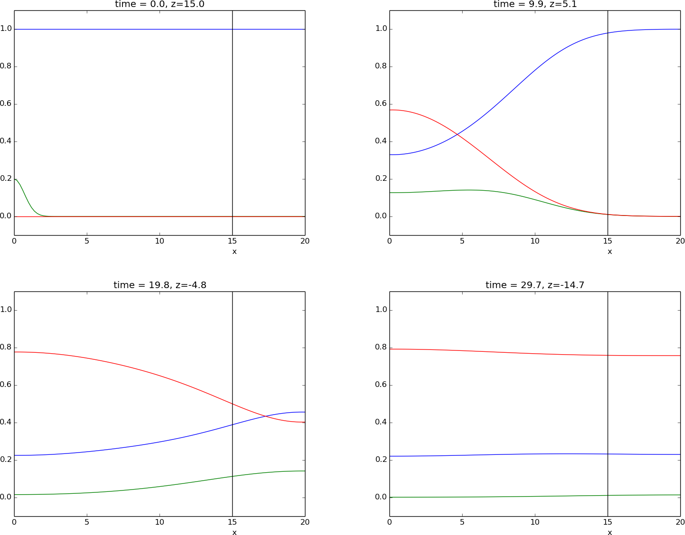
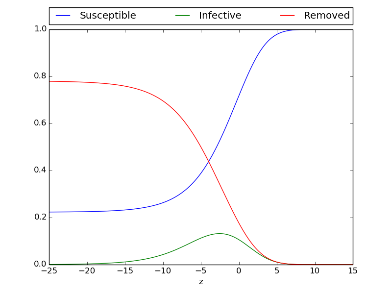
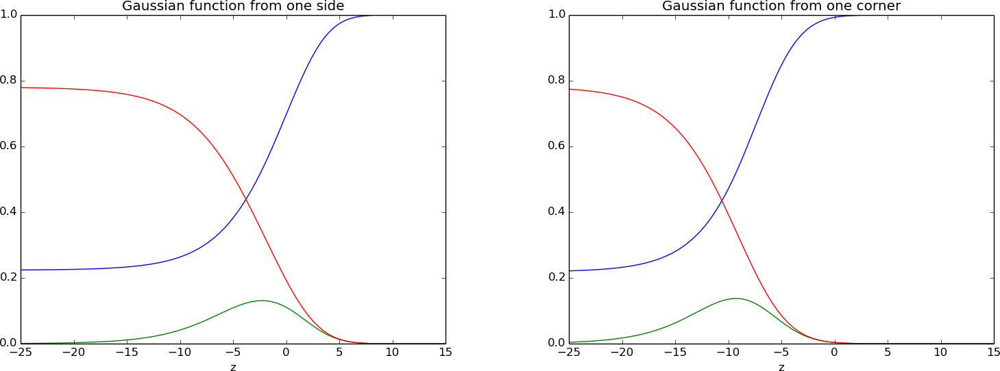
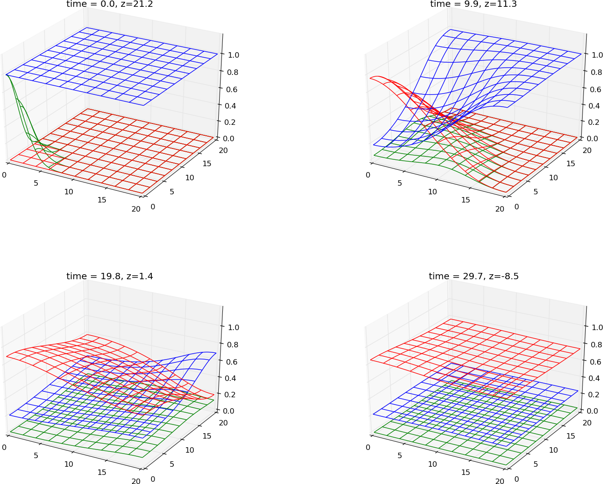
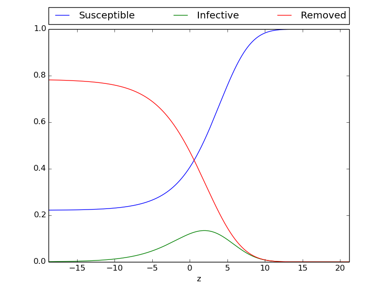
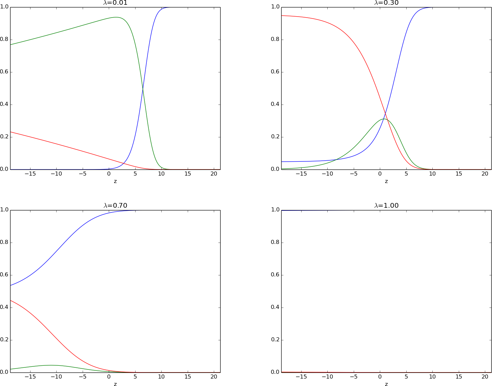
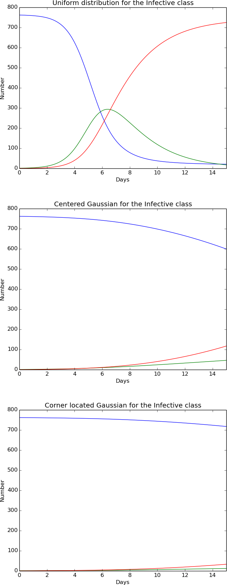
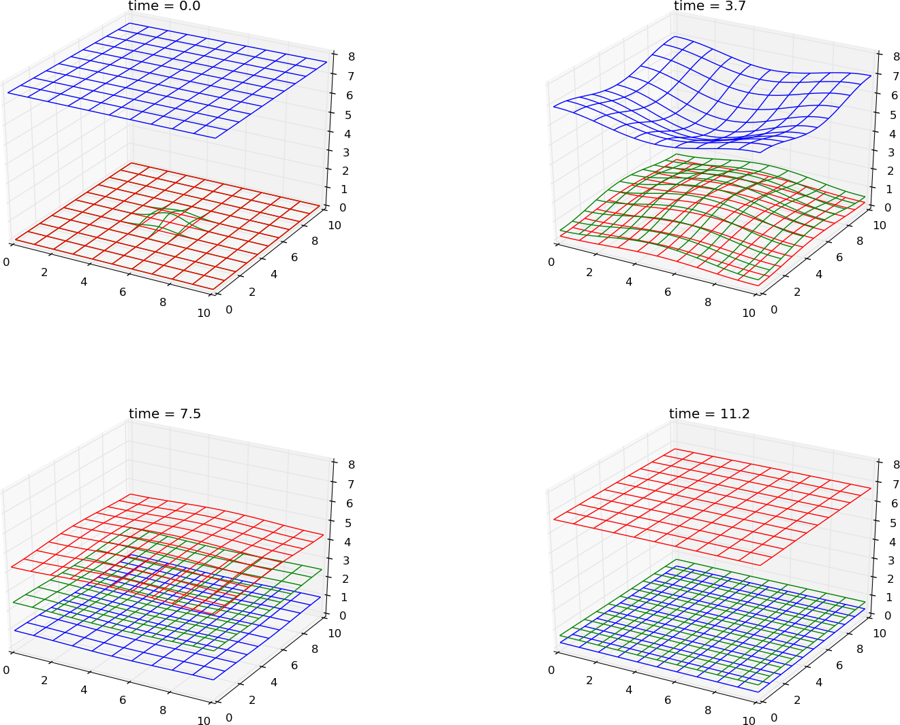

Geographic models
Geographic models
Torbjørn Seland
Nov 25, 2014
Table of contents
Introduction
Simple system for spatial spread
Travelling wave 1D
Verifying the solution
Constant solution
Manufactured solution
Convergence rate
The spatial error
The temporal error
Travelling wave in 2D
A gaussian wave
Change in initial flow
Change in lambda
Epidemic in an English Boarding School 1978
Introducing a Gaussian distribution of infective
Zombiefication
Where does the infected one arises
Lock in different areas
Ten minutes at Frederikkeplassen
random distribution
Appendix
Sympy to find manufactured solution
Discretization
2D Gaussian function from x=0
2D Gaussian function from x=0,y=0
2D Gaussian function from x=0,y=0 with higher initial value
English Boarding School
Gaussian from the corner
A long simulation on 100 Days
Zombiefication
Verify the initial phase
Three phases
middle town
large town
Bibliography
Introduction
This chapter will introduce a new model for epidemic diseases. By expand the ODE system from previous chapter to also consist a term for geographic spread of. The first section Simple system for spatial spread will build on the simple SIR model presented in previous chapter and be based on Geographic spread and Control of epidemics by Murray [1]. The parameters from English Boarding School in previous chaper will be used for the model and the result will be compared between the models. The position of the infected student will be compared against the number of infected each day. The last section,*Zombiefication*, will study and expand the system from Langtangen, Mardal and Røtnes [2]. The results and parameter values used to calculate Walking Dead will be used to simulate the geographic result.
Simple system for spatial spread
A spatial variable, x will now be introduced to the model. This result in both temporal and spatial variations. The difference from a standard ODE system will be the diffusion part added to each equation. The system can be seen in eq(1).
$$
\begin{equation} \tag{1}
\begin{aligned}
\frac{\partial S}{\partial t} &= -rIS + D\nabla ^2 S\\
\frac{\partial I}{\partial t} &= rIS- aI + D\nabla ^2 I\\
\frac{\partial R}{\partial t} &= aI + D\nabla ^2 R
\end{aligned}
\end{equation}
$$
With the following conditions for the boundary and initial values
$$
\begin{equation} \tag{2}
\begin{aligned}
u_x(0,t) &= u_x(X,t) = 0,\quad u = S,I,R\\
u(x,0) &= f_u(x),\quad u= S,I,R
\end{aligned}
\end{equation}
$$
This result in Neumann conditions at the boundary. The following implementation can be used at the boundary
$$
\begin{equation}
\begin{aligned}
\frac{u_{-1}^n - u_1^n}{2\Delta x} &= 0
u_{-1}^n &= u_1^n
\end{aligned}
\end{equation}
$$
This is solved by adding an extra point on each side, called ghost points. The values in these points are updated each time step with values from \( u_1^n \) and \( u_{X-1}^n \) each round. All three classes, \( S,I,R \) have the same diffusion coefficient, \( D \), for this system. This give the three groups the same diffusion speed. This can vary between systems. Section Zombiefication, will contain various diffusion constants. The two parts \( rIS \) and \( aI \) will work in the same way as in the ODE system. Since this model taking the position into account, the idea is to model a group of infective that moves into a uniform population with susceptible, which is spread around with the density \( S_0 \). Then the geotemporal spread can be seen. The problem will first be consider as one-dimensional. The system can be nondimensionalise by writing
$$
\begin{equation} \tag{3}
\begin{aligned}
I^* =\frac{I}{S_0},&\quad I^* = \frac{I}{S_0},&\quad R^*= \frac{R}{S_0},&\\
x^* =\left(\frac{rS_0}{D}\right)^{1/2}x,&\quad t^*=rS_0t,&\quad \lambda =\frac{a}{rS_0},&
\end{aligned}
\end{equation}
$$
\( S_0 \) is used as a representative population. Now the model(1) can be expressed as in eq(4). The asterisks have been dropped to make it easier to read.
$$
\begin{equation} \tag{4}
\begin{aligned}
\frac{\partial S}{\partial t} &= -IS + \frac{\partial^2 S}{\partial x^2},\\
\frac{\partial I}{\partial t} &= IS- \lambda I + \frac{\partial^2 I}{\partial x^2},\\
\frac{\partial R}{\partial t} &= \lambda I + \frac{\partial^2 R}{\partial x^2},
\end{aligned}
\end{equation}
$$
The three parameters \( r \), \( a \) and \( D \) have been replaced by \( \lambda \). The reproduction rate that was presented for the ODE model can be seen as \( 1/\lambda \). This has a couple of equivalent meanings. \( 1/\lambda \) can be seen as the number of secondary infections produced by one primary infected. It can also be used to measure two different time scales. The first one, \( 1/(rS_0) \), measure the contagious time of the disease. The second one can look at the life expectancy for an infective. This can be described \( 1/a \).
Travelling wave 1D
This section will focus on the travelling wave. The travelling wave describe how a group of infected, in this case, travels through a geographic area of humans. This will be shown by sending a pulse of infected into a group of susceptible. A travelling wave solution will be described as follows,
$$
\begin{equation} \tag{5}
I(x,t)=I(z),\quad S(x,t)=S(z),\quad R(x,t) = R(z),\quad z = x-ct,
\end{equation}
$$
The value \( c \) describe the wave speed. This represents a wave of constant shape that travels in the positive x-direction. (5) can be inserted into (4). This result in the ordinary system(6)
$$
\begin{equation} \tag{6}
\begin{aligned}
S'' + cS' - IS &= 0,\\
I'' + cI' + I(S-\lambda)&=0\\
R'' + cR + I\lambda &=0
\end{aligned}
\end{equation}
$$
This gives an eigenvalue problem. The value of \( \lambda \) needs to stay in a range where \( c > 0 \) is fulfilled. The values \( S \), \( I \) and \( R \) have to stay nonnegative. This leads to
$$
\begin{equation}
\begin{aligned}
0 \leq S(-\infty) < S(\infty)&=1\\
I(-\infty)=I(\infty)&=0,\\
1 \geq R(-\infty)\geq R(\infty) &= 0
\end{aligned}
\end{equation}
$$
An epidemic wave can be seen in figure(1). The value of \( \lambda \) is sat to 0.5. The initial value for Susceptible is 1 for the area and the Removed to 0. The Infected class has a Gauss curve around 0 at initial time. In the four subplot, the epidemic wave travel towards the other side. The value \( z \), which is defined in (5), is used to plot the travelling wave measured at a specific point, in this case 15. This travelling wave is shown in figure(2).
Figure 1: The system (ref{eq:ord_diff_sys}. A gaussian curve with height 0.2 placed on the left side. This causes an epidemic wave controlled by the parameter \( \lambda=0.5 \). The size is measured at point \( x=15 \) and can be seen in figure (2).

Figure 2: This shows the travelling wave measures at at \( x=15 \) in figure(1)

The system(6) is a fourth order phase space system. The lower bound for \( c \) can be found. J.D Murray shows this in [1]. The Infective class in system(6) can be linearised when \( z\rightarrow \infty \). This leads to \( S\rightarrow 1 \) and \( I \rightarrow 0 \). The result then become
$$
\begin{equation}
I'' + cI' + I(S-\lambda) \approx 0
\end{equation}
$$
This can be found by
$$
\begin{equation}
I(z) \varpropto \exp\left[(-c \pm {c^2 -4(1-\lambda)}^{1/2})z/2\right]
\end{equation}
$$
Since a concentration cannot be negative, it is required that \( I(z)\rightarrow 0 \). Therefore the solution has to avoid oscillation around 0. If a travelling wave exist, it has to satisfy
$$
\begin{equation}
c \geq 2(1-\lambda)^{1/2}, \lambda < 1
\end{equation}
$$
If \( \lambda > 1 \), no travelling wave will exist. Then the disease will die out. The terms defined in (3) will give the threshold conditions,
$$
\begin{equation}
\lambda = \frac{a}{rS_0} < 1
\end{equation}
$$
This is the same value that was given for the ODE model in the previous chapter.
Verifying the solution
To verify the implementation of the solution, a couple of tests can be done one the system. The system will be tested again a constant solution and a manufactured solution.
Constant solution
A constant solution use preproduced constant values for for the concentrations \( S \), \( I \) and \( R \). These can be replaced by \( S = C_s,I=C_i,R=C_r \). The value of \( C_i \) can only be 0 in system(4). This results in a poor test where several bugs can escape. The system can be expanded by adding a term \( \beta R \) to the Susceptible class and subtract the same term from the Removed class. Then all three values can be tested. The system will then look:
$$
\begin{equation} \tag{9}
\begin{aligned}
\frac{\partial S}{\partial t} &= -IS + \beta R + \frac{\partial^2 S}{\partial x^2},\\
\frac{\partial I}{\partial t} &= IS- \lambda I + \frac{\partial^2 I}{\partial x^2},\\
\frac{\partial R}{\partial t} &= \lambda I - \beta R + \frac{\partial^2 R}{\partial x^2},
\end{aligned}
\end{equation}
$$
By deriving (9), the following system (8) has to be solved
$$
\begin{equation} \tag{8}
\begin{aligned}
C_iC_s &= \beta C_r \\
C_iC_s &= \lambda C_i \\
\lambda C_i &= -\beta C_r
\end{aligned}
\end{equation}
$$
The values \( \beta \) and \( \lambda \) are based on the constants. These can be chosen freely. Here they are sat to \( C_s = 1.2,C_i=0.8,C_r=0.6 \). This result in \( \lambda= C_s = 1.2 \) and \( \beta= \frac{C_s C_i}{C_r}=1.6 \). A test is made in python and can be seen in the code.
def test_constant_solution():
"""
Test problem where u=u_const is the exact solution, to be
reproduced (to machine precision) by any relevant method.
"""
def exact_solution(t):
return C_s,C_i,C_r
def lam(t,x):
return C_s
def beta(t,x):
return (C_s*C_i)/float(C_r)
#Constant values
C_s = 1.2
C_i = 0.8
C_r = 0.6
#lam = C_s
#beta = (lam*C_i)/float(C_r)
T = 2; Nt = 200
X = 20; Nx = 40
S_1 = np.ones(Nx+3)*C_s
I_1 = np.ones(Nx+3)*C_i
R_1 = np.ones(Nx+3)*C_r
t,x,S,I,R = simple_PDE(T,Nx,Nt,X,lam,beta,S_1,I_1,R_1)
S_e,I_e,R_e = exact_solution(t)
difference = abs(S_e - S).max() # max deviation
tol = 1E-14
assert difference < tol
difference = abs(I_e - I).max() # max deviation
tol = 1E-14
assert difference < tol
difference = abs(R_e - R).max() # max deviation
tol = 1E-14
assert difference < tol
The test was run with no error, and the three constant values were produced correctly. This test is not good enough by it self to qualify the program, but an error here would result in a large error in the program that had to be fixed before the next test.
Manufactured solution
By constructing a function to each equation in the system (4), a manufactured solution can be created. Here \( S \),$I$ and \( R \) are pre produced. The system will be
$$
\begin{equation} \tag{9}
\begin{aligned}
\frac{\partial S}{\partial t} &= -IS + \frac{\partial^2 S}{\partial x^2}+f(x,t),\\
\frac{\partial I}{\partial t} &= IS- \lambda I + \frac{\partial^2 I}{\partial x^2}+g(x,t),\\
\frac{\partial R}{\partial t} &= \lambda I + \frac{\partial^2 R}{\partial x^2}+h(x,t),
\end{aligned}
\end{equation}
$$
where \( f \),$g$ and \( h \) are functions to achieve the expected results for \( S \), \( I \) and \( R \). In this case the functions will be:
$$
\begin{equation}
\begin{aligned}
f(x,t) = \frac{\partial S}{\partial t} + IS - \frac{\partial^2 S}{\partial x^2}\\
g(x,t) = \frac{\partial I}{\partial t} - IS + \lambda I - \frac{\partial^2 I}{\partial x^2}\\
h(x,t) = \frac{\partial R}{\partial t} -\lambda I - \frac{\partial^2 R}{\partial x^2},
\end{aligned}
\end{equation}
$$
When choosing the expected function for the classes, it is important that the boundary conditions from (2) is fulfilled.
$$
\begin{equation}
u_x(0,t) = u_x(X,t) = 0
\end{equation}
$$
The quantities have been sat to:
$$
\begin{equation}
\begin{aligned}
S(x,t) = cos(\frac{\pi}{X}x)t\\
I(x,t) = cos(\frac{\pi}{X}x)t\\
R(x,t) = cos(\frac{\pi}{X}x)t
\end{aligned}
\end{equation}
$$
Now sympy can be used to do the calculations for the three functions \( f \), \( g \) and \( h \). The program can be seen in the Appendix. This result in the following equations seen in (10)
Which give
$$
\begin{equation} \tag{10}
\begin{aligned}
f(x,t) &= (t^2\cos(\pi x) + \pi^2t + 1)\cos(\pi x)\\
g(x,t) &= (\lambda t - t^2\cos(\pi x) + \pi^2t + 1)\cos(\pi x)\\
h(x,t) &= (-\lambda t + \pi^2t + 1)\cos(\pi x)
\end{aligned}
\end{equation}
$$
A similar test made for the constant solution can be used here. While the constant test expected a difference on machine precition, this is not the case here. In this test, an expected convergence rate can be measured.
The following manufactured test will then be
def test_manufactured_solution(T,Nt,X,Nx):
"""
Test problem where u=c*t+I is the exact solution, to be
reproduced (to machine precision) by any relevant method.
"""
def exact_solution_S(t,x):
return np.cos(np.pi*x)*t
def exact_solution_I(t,x):
return np.cos(np.pi*x)*t
def exact_solution_R(t,x):
return np.cos(np.pi*x)*t
def beta(t,x):
return exact_solution_S(t,x)*exact_solution_I(t,x)/exact_solution_R(t,x)
lam = 1
def f(t,x):
return (t**2*np.cos(np.pi*x) + np.pi**2*t + 1)*np.cos(np.pi*x)
def g(t,x):
return (lam*t - t**2*np.cos(np.pi*x) + np.pi**2*t + 1)*np.cos(np.pi*x)
def h(t,x):
return (-lam*t + np.pi**2*t + 1)*np.cos(np.pi*x)
dx = X/float(Nx)
dt = T/float(Nt)
S_1 = exact_solution_S(0,np.linspace(0-dx,X+dx,Nx+3))
I_1 = exact_solution_I(0,np.linspace(0-dx,X+dx,Nx+3))
R_1 = exact_solution_R(0,np.linspace(0-dx,X+dx,Nx+3))
t,x,S,I,R = simple_PDE(T,Nx,Nt,X,lam,beta,S_1,I_1,R_1,f,g,h)
S_e = exact_solution_S(t[-1],x)
I_e = exact_solution_I(t[-1],x)
R_e = exact_solution_R(t[-1],x)
difference_S = abs(S_e - S).max() # max deviation
#for i in range(4):
# print "n",i,"S_e",exact_solution_S(t[i],x)
#print "S",S
#t_tot = np.sum(t[:-1])
#print "t_tot",t_tot
#difference_exp = t_tot*dt*np.cos(x*np.pi)*((2*(np.cos(np.pi*dx)-1))/dx**2+np.pi**2)
#print "diff_exp", (abs(difference_exp)).max()
print "diff",difference_S
#tol = 1E-14
#assert difference < tol
difference_I = abs(I_e - I).max() # max deviation
#print "diff",difference_I
#tol = 1E-14
#assert difference < tol
difference_R = abs(R_e - R).max() # max deviation
#print "diff",difference_R
#tol = 1E-14
#assert difference < tol
return difference_S,difference_I,difference_R
Convergence rate
The program can be controlled by checking the convergence rate. The error term for this equation can be described as
$$
\begin{equation} \tag{11}
\epsilon = C_x\Delta x^2 + C_t \Delta t
\end{equation}
$$
With equation(11), the expected convergence rate can be found for both \( \Delta x \) and \( \Delta t \). To be able to separate the \( \Delta \)'s, the other value has to be close to eliminated. To study the value \( \Delta x \), \( \Delta t \ll \Delta x \) has to be fullfilled. This will lead to \( C_t\Delta t \approx 0 \), and the error term for \( \Delta x \) can be found. The opposite thing can be done for \( \Delta t \). A table for the error is produced for different values for \( \Delta t = 0.05 \) and \( \Delta x=0.1 \).
| | \( \Delta x \) | \( \frac{\Delta x}{2} \) | \( \frac{\Delta x}{4} \) | \( \frac{\Delta x}{8} \) |
|---|
| \( \Delta t \) | 9.8E-3 | - | - | - |
| \( \frac{\Delta t}{4} \) | 9.9E-3 | 2.5E-3 | - | - |
| \( \frac{\Delta t}{8} \) | 9.9E-3 | 2.5E-3 | 6.1E-4 | - |
| \( \frac{\Delta t}{16} \) | 9.9E-3 | 2.5E-3 | 6.1E-4 | 1.5E-4 |
The spatial error
The (table:error_numbers) gives information about the error when \( \Delta t \) and \( \Delta x \) are reduced. By studying the row where \( \Delta t/16 \), the \( C_t \Delta t \) can be seen as close to negligible in equation(11). The error can then be expressed
$$
\begin{equation}
\epsilon \propto \Delta x^r
\end{equation}
$$
The value is expected to be \( r=2 \), since Crank Nicolson is used in the spatial discretization. This gives a 2.order error. By comparing the error for different \( \Delta x \), the convergence rate, \( r \), can be expressed,
$$
\begin{equation} \tag{12}
r_{12} \simeq \frac{\log(\epsilon_1/\epsilon_2)}{\log(\Delta x_1/\Delta x_2)}
\end{equation}
$$
Since the table above has four different error values, these can be used to give three different convergence rates. \( \Delta x_1 = \Delta x, \Delta x_2 = \Delta x/2... \). The same labeling will be done for the different error values, \( \epsilon \).
| | \( \epsilon_1/\epsilon_2 \) | \( \epsilon_2/\epsilon_3 \) | \( \epsilon_3/\epsilon_4 \) |
|---|
| r | 2.0056 | 2.0014 | 2.0004 |
Here the rate goes towards 2, and a 2.order convergence rate seems to be fulfilled.
The temporal error
The temporal error is hard to find since the Stability criteria expect \( \Delta t \) to fulfill the criteria in (13) to avoid oscillations.
$$
\begin{equation} \tag{13}
2\Delta t \leq \Delta x^2
\end{equation}
$$
This results in the case that \( \Delta x \ll \Delta t \) is impossible, because this only leads to an unstable solution. By looking at the column for \( \frac{\Delta x}{8} \), the only stable solution is for \( \frac{\Delta t}{16} \). Therefore the technique used for the spatial error cannot be used here. By studying the diagonal numbers in the table, the expected convergence rate is fulfilled for both \( \Delta x \), which gives \( r = 2 \) and for \( \Delta t \) that gives \( r=1 \)
Travelling wave in 2D
The system (4) can be discretized for a 2D area. This is more realistic when simulating a geographic spread of an epidemic disease. The non dimensional system can be discretized with Forward Euler in time and Crank Nicolson in space
$$
\begin{equation} \tag{14}
\begin{aligned}
\frac{S^{n+1}_{i,j}-S^n_{i,j}}{\Delta t} &= -I^{n}_{i,j}S^{n}_{i,j} + \left(\frac{S^{n}_{i-1,j}-2S^{n}_{i,j}+S^{n}_{i+1,j}}{\Delta x^2}+\frac{S^{n}_{i,j-1}-2S^{n}_{i,j}+S^{n}_{i,j+1}}{\Delta y^2}\right) \\
\frac{I^{n+1}_{i,j}-I^n_{i,j}}{\Delta t} &= I^{n}_{i,j}S^{n}_{i,j} -\lambda I^{n}_{i,j} + \left(\frac{I^{n}_{i-1,j}-2I^{n}_{i,j}+I^{n}_{i+1,j}}{\Delta x^2}+\frac{I^{n}_{i,j-1}-2I^{n}_{i,j}+I^{n}_{i,j+1}}{\Delta y^2}\right) \\
\frac{R^{n+1}_{i,j}-R^n_{i,j}}{\Delta t} &= \lambda I^{n}_{i,j}+\left(\frac{R^{n}_{i-1,j}-2R^{n}_{i,j}+R^{n}_{i+1,j}}{\Delta x^2}+\frac{R^{n}_{i,j-1}-2R^{n}_{i,j}+R^{n}_{i,j+1}}{\Delta y^2}\right)
\end{aligned}
\end{equation}
$$
The known values can be placed on the right side. The system will then be
$$
\begin{equation}
\begin{aligned}
S^{n+1}_{i,j} &= S^{n}_{i,j}+\Delta t\left(-I^{n}_{i,j}S^{n}_{i,j} + \left(\frac{S^{n}_{i-1,j}-2S^{n}_{i,j}+S^{n}_{i+1,j}}{\Delta x^2}+\frac{S^{n}_{i,j-1}-2S^{n}_{i,j}+S^{n}_{i,j+1}}{\Delta y^2}\right)\right) \\
I^{n+1}_{i,j} &= I^{n}_{i,j}+\Delta t\left(I^{n}_{i,j}S^{n}_{i,j} -\lambda I^{n}_{i,j} + \left(\frac{I^{n}_{i-1,j}-2I^{n}_{i,j}+I^{n}_{i+1,j}}{\Delta x^2}+\frac{I^{n}_{i,j-1}-2I^{n}_{i,j}+I^{n}_{i,j+1}}{\Delta y^2}\right)\right) \\
R^{n+1}_{i,j} &= R^{n}_{i,j}+\Delta t\left(\lambda I^{n}_{i,j}+\left(\frac{R^{n}_{i-1,j}-2R^{n}_{i,j}+R^{n}_{i+1,j}}{\Delta x^2}+\frac{R^{n}_{i,j-1}-2R^{n}_{i,j}+R^{n}_{i,j+1}}{\Delta y^2}\right)\right)
\end{aligned}
\end{equation}
$$
This results in an explicit system, which is easy to code. It consist of known values on the right side and only one unknown on the left side.
A gaussian wave
In the PDE system for the 1D equation, a Gaussian quantity of infected humans was placed on the left side in the initial value. This resulted in a wave of infected spread along the x-axis. A similar thing can be done for the 2D simulation. A couple of similar simulations have been produced for the 2D system. The first simulation is calculated with a Gaussian function along \( x=0 \) for the Infected at initial time. The second simulation has placed the Gaussian function at point \( x=0,y=0 \) for the Infected group at initial value. Both simulations can be seen in the Appendix.
By studying the travelling wave at a certain point, the size of the epidemic wave can be measured and compared. In these two 2D simulations in figure(3), the wave will be measured in the point (15,15) while the travelling wave in the 1D simulation was measured at point(15). The two travelling waves can be seen in the figure(3).
Figure 3: Travelling wave measured at point (15,15) with two different initial values for the Infected class. The initial value is sat as a Gaussian line along (0,y) in the left plot and as a Gaussian point (0,0) in the right plot

The shape of the two travelling waves in figure(3) are similar. The only difference is the time when the wave occur. The plot for 1D wave in fig(2) has the same shape. With a closer study, the area under the function can be measured for all three cases. The result can be seen in the (table:wave_values)
| 1D wave | 2D wave line | 2D wave point |
|---|
| 1.43 | 1.43 | 1.43 |
The area in all three simulations moves towards the same area when \( \Delta t \) and \( \Delta x \) are reduced. The size and shape will not change by expanding the system from 1D to 2D. But by studying the figure(3), the wave occur at different times. This is caused by the distance from the start position for the Gaussian wave. The first subplot that starts with a Gaussian function along the \( x=0 \) axis gets a wave of infected wash along the x axis. This can be seen as a wave on the beach. Everyone that have the same distance from the ocean will be hit simultaneously. The travelling wave for the 1D simulation and the first subplot occur at the same time, because they are measured at the same distance from the starting point. The last plot is also measured at (15,15), but occur later. Since the wave starts at point (0,0), the distance to (15,15) is 21.21. This means that the wave will reach the point 6.21 time steps later. This is also reasonable by looking at the plot.
Change in initial flow
By increasing the initial wave of Infected, the start value of Infected can be study. The simulation is run with the same parameters as for the three simulations above and the only difference is the initial value for the infected group. The Gaussian wave of infected are placed a point (0,0) as for right subplot in figure(3).The simulation can be seen in figure(4).
Figure 4: A major flow of infected spread outwards the field. After a certain time, the wave has past the area and the number in each class stabilize.

By measuring the travelling wave at point(15,15), the size and shape can be compared with the second subplot in figure(3). The travelling wave for this simulation can be seen in figure(5) and the area for the travelling wave is measured to 1.43, which is similar with the three other simulations.
Figure 5: The travelling wave with a major increase of infected at the initial time.

By increasing the initial value for the Infected group, the size of the travelling will not be affected. But there is a difference in the time when the wave occur. In the simulation where the initial value is higher, the travelling wave reaches the measuring point (15,15) earlier. This can be explained by the idea of a ball dropped from a large height. If the ball is released or thrown to the ground, will only affect the acceleration of the ball, not the terminal velocity. After a certain time the released ball and the thrown ball will reach the same maximum speed. This is also the case for the speed of the travelling wave.
Change in lambda
The one thing that affects the speed and size, is the \( \lambda \) variable in the PDE system(4). This \( \lambda \) is a combination of \( a \), which controls deaths among infected, \( r \), which control the number of infected in a meeting between an infected and a susceptible. The last parameter in \( \lambda \) is the concentration of Susceptible. By changing this parameter, the travelling wave will change in both size and shape. In figure(6), the simulation is run with four different values of \( \lambda \).
Figure 6: The travelling wave simulated with \( \lambda \) values in the range of 0.01 to 1.

To understand the result in figure(6), the \( \lambda \) function can be study,
$$
\begin{equation} \tag{15}
\lambda =\frac{a}{rS_0},
\end{equation}
$$
A major and aggressive travelling wave is caused by \( \lambda \rightarrow 0 \). In figure(6), \( \lambda \) is run with the value 0.01 in the first subplot. This results in a travelling wave of infected that eradicates the Susceptible group in a short time. The wave starts to decreasing when all Susceptible are infected. By looking at the equation(15), a small value is caused by a small \( a \) compared to \( r \) and \( S_0 \). If \( a \) is low, this result in few deaths/immune in the infected class. This means that this class will grow and be able to infect even more from the Susceptible class. The same thing will happen if \( r \) is large. A result of this will cause an aggressive disease that infects a major part of the population. The same result will happen if \( S_0 \) is large. Then there are several possible humans to infect. Therefore a outburst of a disease is more critically in a city than in the wilderness, far from other humans.
If \( \lambda \) increases above 1, the disease will not be able to spread. The number of infected will decrease, since the number of dead/immune caused by the Infected group is higher than the amount of Infected humans from the Susceptible group. After a certain time, the number of infected will die out. If \( \lambda \) stays at 1, the number of infected will be equal the whole time.
Epidemic in an English Boarding School 1978
An example from an English boarding school was presented in the previous chapter . This example was based on the book from J.D Murray [3], and was modeled for a ODE system. A similar result should appear for the PDE system with same parameter values and a uniform distribution of the groups. The school had 763 students where one of the students brought a disease back to the school. The following number was used for the ODE system in chapter one. \( N=763, S_0=762,I_0=1,R_0=0,\rho=202 \) and \( r = 2.18\cdot 10^{-3} \).
The first simulation is produced with uniform distributed concentration, this is done to verify the implementation. A person is defined as one cubic. The total volume of the whole group is spread over the area. The area is sat to be 100 m x 100 m, which result in an average height of \( 1/10000 \) m per person. This is to get an uniformed distribution. This would of course be more difficult in the real life, particular if the person should be alive. Since the Infected group only consist of one person, the total height will be 0.0001 for the whole area. The Susceptible group consist of 762 students and the total height in each point will be 0.0762 The simulation can be seen in the Appendix.
The results from the first subplot in figure(7) are equal with the result from the ODE system modeled in the previous chapter.This can be seen in (table:british_number_table). This is as expected since the diffusion term is negligible in this system and simulation is a group of separate ODE systems modeled at each point over an area.
Figure 7: English Boarding School modeled with three different initial values for the infected student. The amount of students in each group modeled over 15 days. Subplot 1: uniform distribution. Subplot 2: The student is placed as a Gaussian function in center. Subplot 3: The student is placed as a Gaussian function in the corner (0,0).

| | ODE system | PDE uniform dist | PDE center | PDE corner |
|---|
| 5 Days | ----------- | ------------------- | ----------- | ----------- |
| Susceptible | 444.62 | 444.62 | 748.03 | 757.33 |
| Infective | 209.56 | 209.56 | 7.36 | 2.35 |
| Removed | 108.82 | 108.82 | 7.60 | 3.32 |
| 10 Days | ----------- | ------------------- | ----------- | ----------- |
| Susceptible | 37.59 | 37.59 | 697.71 | 743.58 |
| Infective | 117.59 | 117.59 | 24.43 | 6.66 |
| Removed | 607.82 | 607.82 | 40.86 | 12.76 |
| 15 Days | ----------- | ------------------- | ----------- | ----------- |
| Susceptible | 21.09 | 21.09 | 597.01 | 717.02 |
| Infective | 17.30 | 17.30 | 46.96 | 12.37 |
| Removed | 724.62 | 724.62 | 119.03 | 33.61 |
Introducing a Gaussian distribution of infective
An assumption to make is that a person is not able to be evenly distributed over an area. In this example with only one infected student at initial time, the chance of being infected increase as closer you get to the infected student. The student in placed as a Gaussian function in the middle of the school yard, to see if this affect the result. The height is sat to 1 and the volume of the Gauss function is sat to 1 cubic. The simulation can be seen in figure(8) and the total total amount of students can be be seen in figure(7).
Figure 8: The student is placed in the center of the school yard as a Gaussian finction with height= 1 m and volume = 1 m^3.

The results from the uniform distributed and Gaussian distributed simulations shows variously results. The difference between the simulations is the placement of the infective. This change has a major impact. Since the only one that can be infected with the Gaussian distribution are the students close to the infective, it restrict the spread of the epidemic. While the chance of getting infected in this area is higher. The figure(8) shows that the amount of infective quickly grow in the center, where the infected was placed. The last subplot also show that the amount of removed in the center are closed to the maximum of the initial value of Susceptible. While the students along the boundary of the school yard seems to be unaffected after 15 days. This simulation shows that the placement of the infective has a major role in the simulation.
The placement of the infective, here as a Gaussian function, also affects the outcome. The last subplot in Fi.(7) describes a simulation where the Gaussian function is placed in the corner(0,0). The total volume of the function is increased to 4 since only a quarter of the function is placed in the area. The table (table:british_number_table) shows that the total number of infected is lower than for the centered placed Gaussian. The infected student is only able to spread the disease to a quarter of the population compared to the infected one in the center. The simulation can be seen in the Appendix.
If the simulations are run for a longer time, the difference between each class will decrease. After 100 days there will be about 18 susceptible students left in the uniform distributed group, compared to 25 students in both of the Gaussian groups. The simulations can be seen in the Appendix.